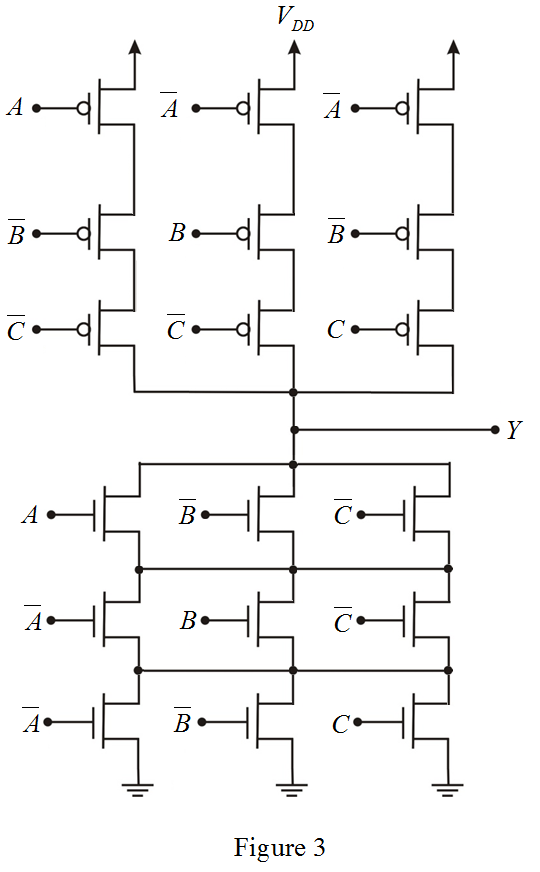
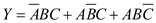
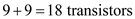
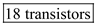
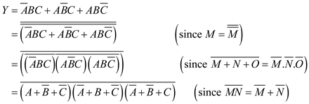
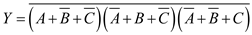
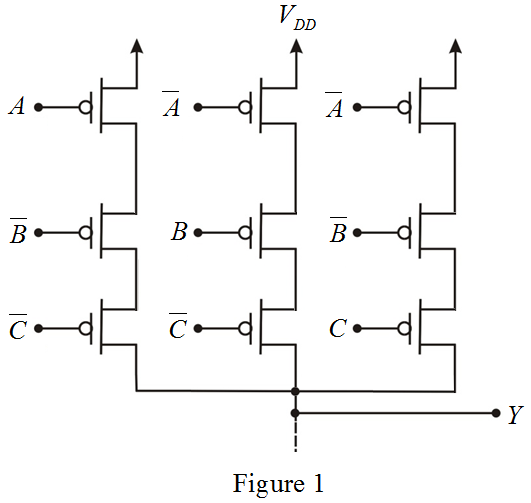
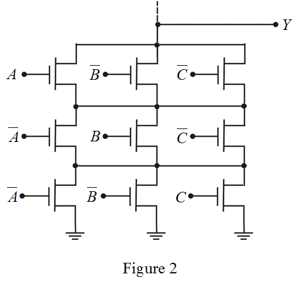
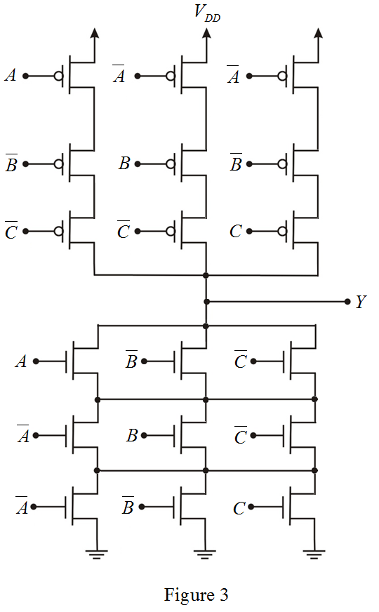

.
. 
Thus, the CMOS realization for the logic functionis sketched as shown in Figure 3.
Consider the following logic function:

The CMOS logic gate is combination of pull up network (PUN) and pull down network (PDN). The PUN comprises PMOS transistors, and the PDN comprises NMOS transistors.
The PMOS transistor conducts when the input signal at its gate is low, and the NMOS transistor conducts when the input signal at its gate is high.
In the CMOS gate circuit, the PDN and the PUN are dual networks where series branch exist in one, a parallel branch exists in other.
The number of PMOS transistors required for pull-up network is,
The number of NMOS transistors required for pull-down network is,
Determine the total number of transistors required for CMOS logic gate.

Thus, the total number of transistors required for CMOS logic gate is, .
The logic function can be expressed as follows.

Draw the pull-up network for the logic function, which comprises PMOS transistors only.

Draw the pull-down network for the function, which comprises NMOS transistors only.

. 
Thus, the CMOS realization for the logic functionis sketched as shown in Figure 3.